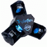
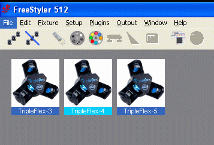
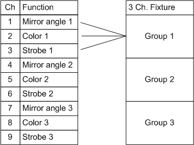
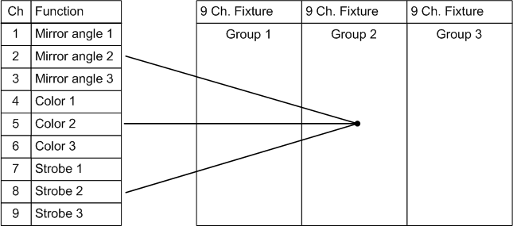
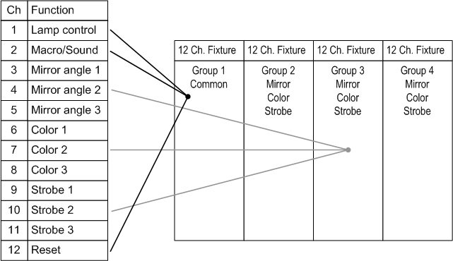
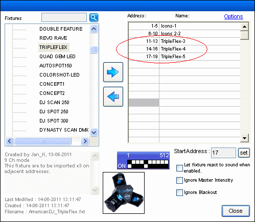
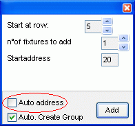
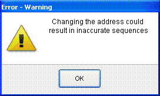
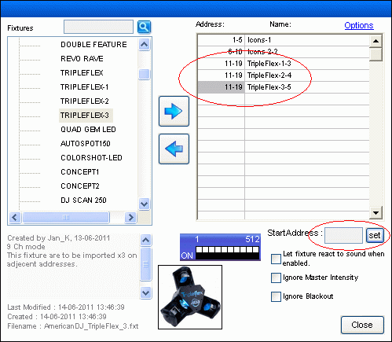
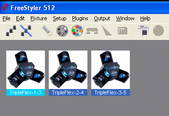

Fixture Creator - Combined Fixtures.
When one fixture file isn’t enough to control a real fixture.
Basics in combined fixture.
Here word “unit” are used as name for the fixture hw. and the word “fixture” is the fixture file that are added in Freestyler.

The picture here is American Dj TripleFlex.
It is used as an example but the DMX tables are fictive and just intended to illustrate the difference in the fixture configuration.
Combined fixtures are when more fixtures are combined to control one unit.
It can be a LED matrix where many cells are to be controlled individually or a dual scanner where 2 mirror are to be controlled. It could also be a laser that has more than 150 images are to be mapped to individual icons.
150 images is the limit for macros and some lasers has a bank selection that interacts with an image selection. This makes the image control for the laser to a two or more channels control and this require macros for control.
The fixtures are placed on same or adjacent addresses in Freestyler and thereby gives the full control over a unit.
In this picture, 3 identical fixture are needed to control a whole unit.
Each fixture controls one of the 3 scanners in the unit.

{kind=link}
{kind=link}
How to begin.
First the fixture DMX table are to be looked through to detects common blocks and relations / individual blocks.
Channel relation.
If the channels are placed next to each other for the unit part that are to be controlled then the combined fixtures can be made same fixture placed on different addresses.
This gives that there is only one fixture to create and to maintain.
In Freestyler the user then are to add the correct numbers of fixtures to control the unit.

If the channels are mixed to control parts of the unit then a fixture are to be made for each part and then placed on the same address in Freestyler.
Though the fixture is 9 channel wide it still only controls 3 addresses

Common Blocks
What goes into this block is controls that only are present once in the unit.
This could be lamp on / off if there is only one lamp, music / manual control, reset and so on.
All these controls are configured in one fixture that is only present once in Freestyler.

Here an example with one fixture where the common control are in and 3 fixtures which each control one of the 3 scanners.
A real example can be found here American DJ Mega Bar Led
Note: Common block don’t necessarily exist in all units.
Adding the fixtures in Freestyler.
The key word combined fixtures is adding the correct number of fixtures and set the right addresses for them.
Add Fixtures on adjacent addresses.
Adding fixtures on adjacent channels is just adding them one by one and freestyler automatically gives the next addresses.
I the fixtures are different from each other then remember to add them in the right order.
It could be that the first block is a common block.

In this picture the unit address are to be set to 11. It then covers 9 channels in total which gives that the last channel are on address 19.
Scanner 1 is from 11 to 13.
Scanner 2 is from 14 to 16.
Scanner 3 is from 17 to 19.
Added to the window it looks like this.
All fixture are the same TripleFlex. The 3, 4 and 5 is the fixture number Freestyler adds.
Add fixtures on same addresses.
The order of adding the fixture is not critical because all fixtures covers all channels for the unit.
To add fixtures on the same address the “auto address” are to be disabled.

Add the fixture. The address is now blank.
This is set in “Start Address”, here 11, and press the set button.
When adding fixtures and giving them addresses manually this warning will come.


As it can be seen on the picture all 3 fixture starts on address 11 and uses 9 channels to address 19.
The unit is set to address 11.
Note that here is 3 different fixtures.
TripleFlex-1: ch1 mirror, ch4 Color, ch7 strobe.
TripleFlex-2: ch2 mirror, ch5 Color, ch8 strobe.
TripleFlex-3: ch3 mirror, ch6 Color, ch9 strobe.
Added to the window it looks like this.

The 3 fixtures are 3 different fixtures each controlling mirror, color and strobe for one of the 3 scanners in the unit. The last number 3, 4 and 5 is the fixture number Freestyler adds.
The fixture could also have been made with different images on. It could have been a large 1, 2 and 3 in the image.
{kind=link}
{kind=link}
{kind=link}
{kind=link}
{kind=link}
{kind=link}
{kind=link}
{kind=link}